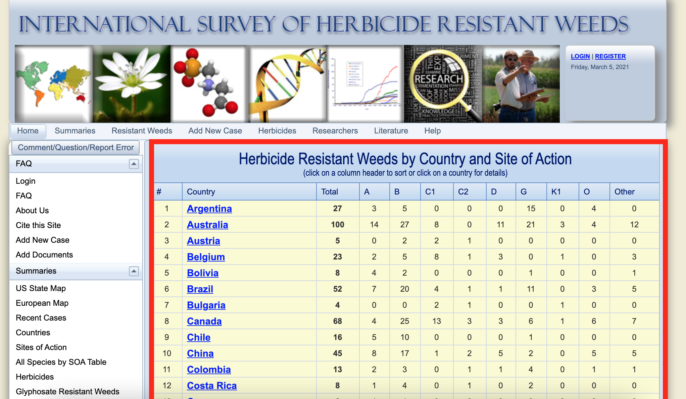
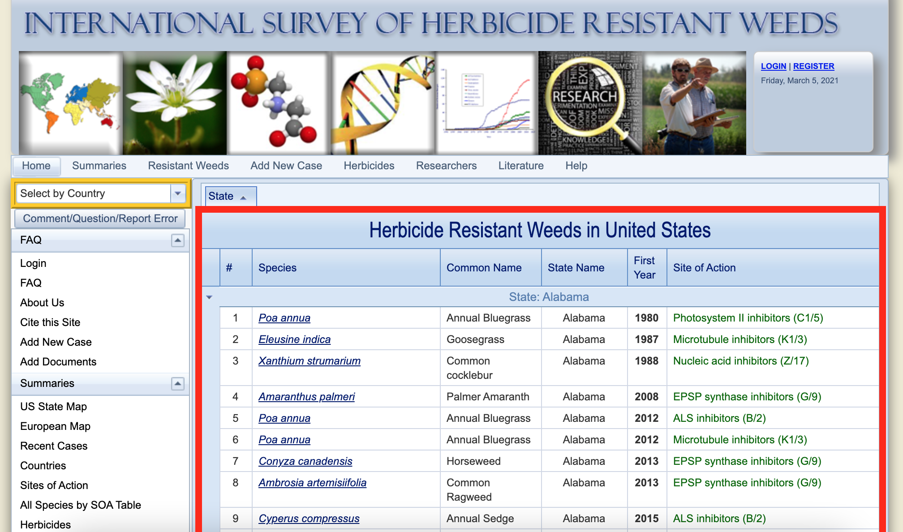

Scraping herbicide resistance weeds by county and site of action
Once you have loaded the package in R we will start retrieving the herbicide resistance weeds by county and site of action. The data we needed can be found in the link (http://weedscience.org/Summary/CountrySummary.aspx), see below (yellow table):

The figure above shows the web page with the data we need to retrieve. If you scroll down you can see that there are a list of 71 countries with number of herbicide resistance, total and resistance by sites of action (SOA). Notice that SOA are represented by Herbicide Resistance Action Committee (HRAC) nomenclature.
Now we need to load the web page (http://weedscience.org/Summary/CountrySummary.aspx) in R. We will use the function read_html. Let’s run the code below. Notice that “world_resistance” is the name I chose to assign the webpage information.
world_resistance <- read_html("http://weedscience.org/Summary/CountrySummary.aspx")
The webpage link is now stored in “world_resistance”. We will now use two functions, html_node and html_table, to extract only the Herbicide Resistance Weeds by County and Site of Action Table. The html_node() extract the selector, which is “table” for this webpage. Then I use html_table() to make the output as a table. Notice the operator %>% is used to pass the result of one step as input for the next step.
resistance_chart <- world_resistance %>%
html_node("table") %>% # selector = table
html_table(fill = TRUE) # get a table
resistance_chart %>%
slice_head(n = 5) # display 5 rows
## X1
## 1 Herbicide Resistant Weeds by Country and Site of Action(click on a column header to sort or click on a country for details)
## 2 #
## 3 1
## 4 2
## 5 3
## X2 X3 X4 X5 X6 X7 X8 X9 X10 X11 X12
## 1 <NA> <NA> <NA> <NA> <NA> <NA> <NA> <NA> <NA> <NA> <NA>
## 2 Country Total A B C1 C2 D G K1 O Other
## 3 Argentina 27 3 5 0 0 0 15 0 4 0
## 4 Australia 100 14 27 8 0 11 21 3 4 12
## 5 Austria 5 0 2 2 1 0 0 0 0 0
Notice that the output of “resistance_chart” is not tidy yet (and you know we like our data tidy, don’t we!?). We will use package janitor functions row_to_names() and clean_names() to adjust the table header.
resistance_chart1 <- resistance_chart %>%
janitor::row_to_names(row_number = 2) %>% # make second column header
janitor::clean_names() %>% # clean header
as_tibble() %>% # tibble is better than data.frame
mutate_at(vars(-country), as.integer) # make column numbers as integers
You can see that table is tidy and ready to be used as your needs (much better, yes?). If needed, an additional step is to make a single column combining all sites of action columns, here described as letters.
resistance_chart2 <- resistance_chart1 %>%
pivot_longer(cols = a:other, # select columns to pivot
names_to = "soa", # new column name
values_to = "resistant") # new values column name
resistance_chart2
## # A tibble: 639 x 5
## number country total soa resistant
## <int> <chr> <int> <chr> <int>
## 1 1 Argentina 27 a 3
## 2 1 Argentina 27 b 5
## 3 1 Argentina 27 c1 0
## 4 1 Argentina 27 c2 0
## 5 1 Argentina 27 d 0
## 6 1 Argentina 27 g 15
## 7 1 Argentina 27 k1 0
## 8 1 Argentina 27 o 4
## 9 1 Argentina 27 other 0
## 10 2 Australia 100 a 14
## # … with 629 more rows
Scraping herbicide resistant weeds with detail information
You might be interested in selecting herbicide resistant weeds data in a country of your choice. Here we will show how to extract herbicide resistance data from all 71 countries listed in the Heap et al. (2021) database. The gif below demonstrates the data that we are retrieving from the website.

I clicked on United States to show the data that we are retrieving from the website but we will get that data from all 71 countries listed.
The link below show an example of the data we are are interested. Notice the website link changed a bit when we click on United States: http://weedscience.org/Summary/Country.aspx?CountryID=45. If you look closely, the only thing is changing is the last attribute of the link, ID. Each country has their own code ID. The United States ID is 45.

Knowing that we can extract all 71 countries’ data at once. We will use a similar code snippet, as demonstrated earlier in this post. The difference is that we are using the codes inside a function (country_function) that takes the country id as an argument and pass into the function body.
country_function <- function(id) {
url <- paste0("http://weedscience.org/Summary/Country.aspx?CountryID=",id,"")
#id will change by each country id number
# Read url
resistance <- read_html(url)
# Extract herbicide resistance data
chart <- resistance %>%
html_node(".rgMasterTable") %>% # selector
html_table(fill = TRUE) # get the table
# Tidy dataset
final_chart <- chart %>%
janitor::row_to_names(row_number = 2) %>% # make second column header
janitor::clean_names() %>% # clean header
as_tibble() %>% # tibble is better than data.frame
drop_na() %>% # drop NA values
mutate_at(c("number", "first_year",
"country_id", "resist_id"),
as.integer) # make columns numbers as integer
# Get final dataset
final_chart
}
Now, the function is done and we want to test it. Lets use id = 1 to see the output.
country_function(id = 1)
## # A tibble: 152 x 10
## x number species common_name country state_name first_year country_id
## <chr> <int> <chr> <chr> <chr> <chr> <int> <int>
## 1 "" 1 Lolium… Rigid Ryeg… Austra… New South… 1985 1
## 2 "" 2 Avena … Sterile Oat Austra… New South… 1989 1
## 3 "" 3 Avena … Wild Oat Austra… New South… 1991 1
## 4 "" 4 Cyperu… Smallflowe… Austra… New South… 1994 1
## 5 "" 5 Sagitt… California… Austra… New South… 1994 1
## 6 "" 6 Damaso… Starfruit Austra… New South… 1994 1
## 7 "" 7 Sisymb… Oriental M… Austra… New South… 1994 1
## 8 "" 8 Sinapi… Wild Musta… Austra… New South… 1996 1
## 9 "" 9 Phalar… Hood Canar… Austra… New South… 1997 1
## 10 "" 10 Lolium… Rigid Ryeg… Austra… New South… 1997 1
## # … with 142 more rows, and 2 more variables: site_of_action <chr>,
## # resist_id <int>
Great! The function works.

It gets the data from Australia, which means that the Australia ID in this website is 1. However, countries are listed alphabetically here: http://weedscience.org/Summary/CountrySummary.aspx. Therefore, I was expecting Argentina to be id = 1, not Australia.
It turns out that id number is not following the alphabetical order.

Fear not, we’ve got a plan.
After some workarounds I have gotten the full country name and id number.
country <- tribble(
~country_name, ~id,
"argentina", 48,
"australia", 1,
"austria", 2,
"belgium ", 3,
"bolivia", 4,
"brazil", 5,
"bulgaria", 6,
"canada", 7,
"chile", 8,
"china", 9,
"colombia", 10,
"costa rica", 11,
"czech republic", 12,
"denmark", 13,
"ecuador", 14,
"egypt", 15,
"fiji", 16,
"france", 17,
"germany", 18,
"greece", 19,
"hungary", 20,
"india", 21,
"indonesia", 22,
"israel", 23,
"italy", 24,
"japan", 25,
"kenya", 26,
"south korea", 27,
"malaysia", 28,
"mexico", 29,
"new zealand", 30,
"norway", 31,
"philippines", 32,
"poland", 33,
"portugal", 34,
"saudi arabia", 35,
"slovenia", 36,
"south africa", 37,
"spain", 38,
"sri lanka", 39,
"sweden", 40,
"switzerland", 41,
"taiwan", 42,
"netherlands", 43,
"united kingdom", 44,
"united states", 45,
"paraguay", 46,
"thailand", 47,
"cyprus", 53,
"jordan", 55,
"nicaragua", 60,
"russia", 65,
"syria", 69,
"turkey", 71,
"uruguay", 73,
"ethiopia", 76,
"tunisia", 78,
"iran", 79,
"venezuela", 80,
"ireland", 81,
"panama", 82,
"el salvador", 83,
"guatemala", 84,
"honduras", 85,
"pakistan", 86,
"finland", 139,
"kazakhstan", 157,
"latvia", 174,
"lithuania", 185,
"serbia", 245,
"ukraine", 230
)
country
## # A tibble: 71 x 2
## country_name id
## <chr> <dbl>
## 1 "argentina" 48
## 2 "australia" 1
## 3 "austria" 2
## 4 "belgium " 3
## 5 "bolivia" 4
## 6 "brazil" 5
## 7 "bulgaria" 6
## 8 "canada" 7
## 9 "chile" 8
## 10 "china" 9
## # … with 61 more rows
Once you have the data set with country and id number, we can iterate with map function from purrr package.
resistance_data <- country %>%
arrange(country_name) %>% #arrange country in alphabetical order
mutate(resistance_data = map(id, country_function)) # iterate function over id
# resistance data is in a list by each country
resistance_data
## # A tibble: 71 x 3
## country_name id resistance_data
## <chr> <dbl> <list>
## 1 "argentina" 48 <tibble [28 × 9]>
## 2 "australia" 1 <tibble [152 × 10]>
## 3 "austria" 2 <tibble [4 × 9]>
## 4 "belgium " 3 <tibble [21 × 9]>
## 5 "bolivia" 4 <tibble [8 × 9]>
## 6 "brazil" 5 <tibble [54 × 9]>
## 7 "bulgaria" 6 <tibble [4 × 9]>
## 8 "canada" 7 <tibble [118 × 10]>
## 9 "chile" 8 <tibble [19 × 9]>
## 10 "china" 9 <tibble [44 × 9]>
## # … with 61 more rows
Finally, we use unnest function to unlist the resistance_data.
final_resistance_data <- resistance_data %>%
unnest(resistance_data) %>% # unlist resistance data
dplyr::select(-x) # removing column x

{kind=link}